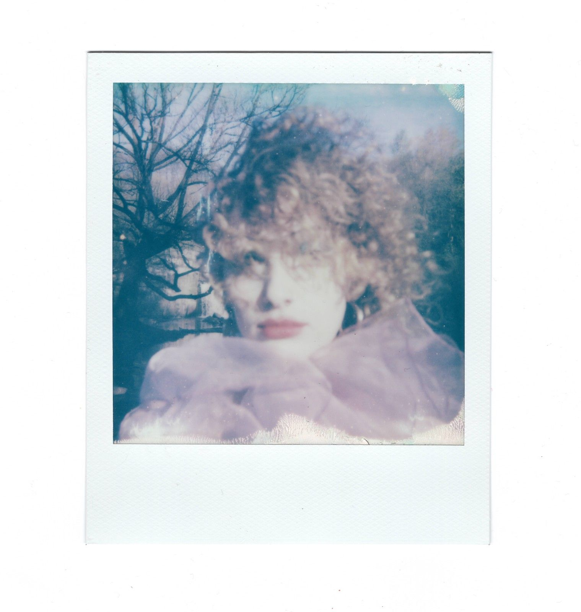
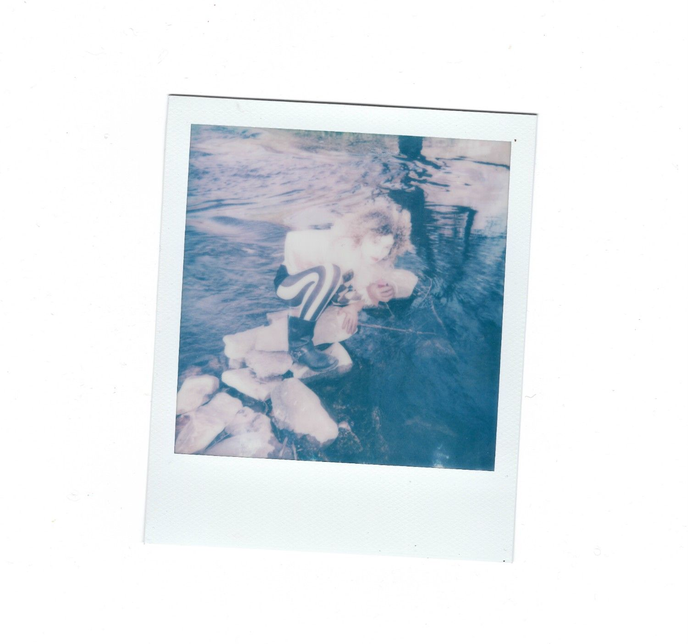
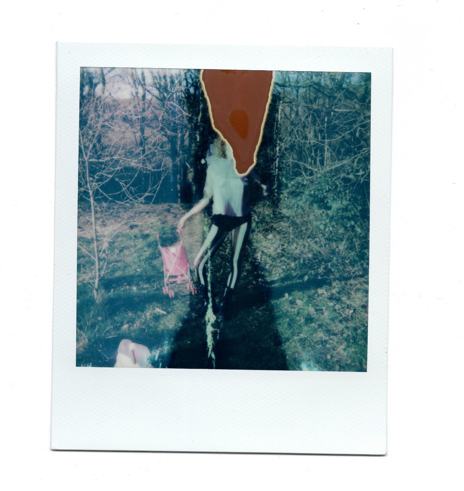
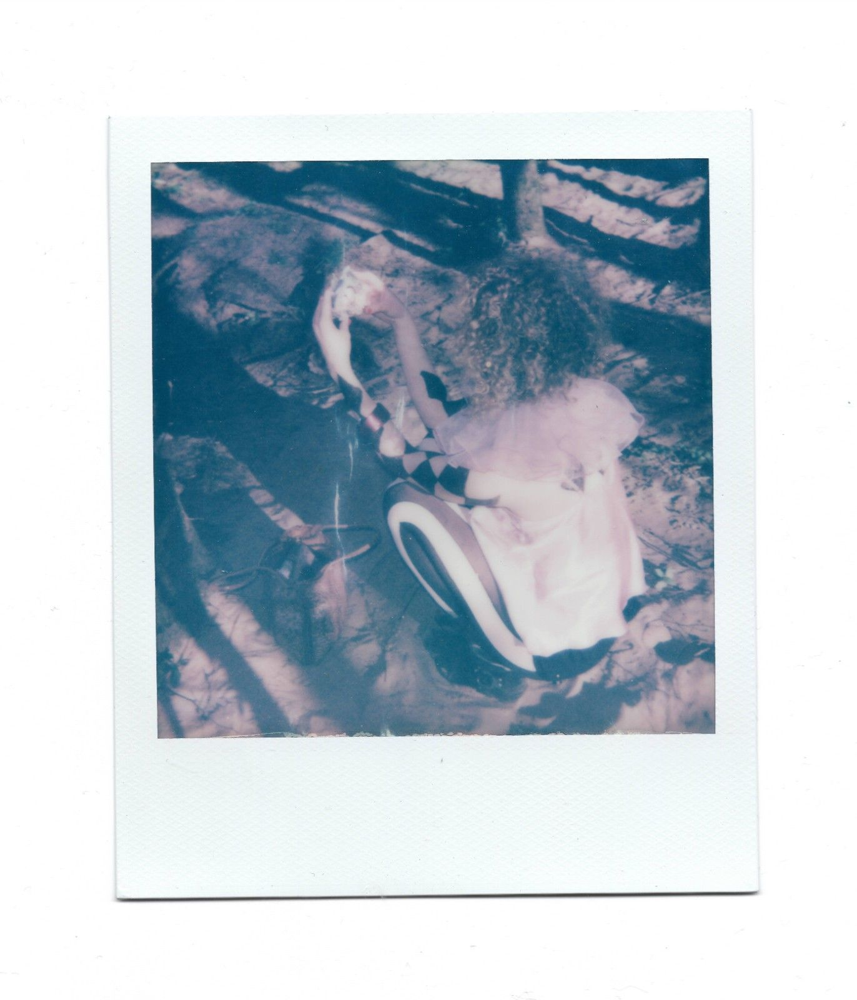

~~The moving image piece, Whimsical Clown Gets Lost in the Forest and Can’t Stop Sucking (Not Clickbait), begins exploring and cultivating a relationship between the human body and the natural world, which is integral to my practice as a tattoo artist. Using both footage from the shoot and archival footage from an extensive collection of my own recordings, the body oscillates between limbs and tree bark, water and hair. However, the plot descends (or transcends) as our Whimsical Clown’s connection with nature gets disrupted with the discovery of a Big Pink Vape, tantalisingly growing from a tree branch in mid-winter.
Lara’s scrolling and vaping sessions, she tells me jokingly, end in her either throwing the vape across the room in a moment of rage and realisation, or filling up a glass of water and drowning the device. Vapes have become an inside joke among much of this generation due to their ridiculous nature, in their exaggeratedness, instantaneity, mysterious substances, and blatant marketing toward children. To engage with disposable vapes is understood as somewhat embarrassing, so to do so, it has to be under an ironic guise that involves a self-awareness and awareness of the market’s exploitative powers.
Through the creation of characters, backstories, and alternative lives, my practice explores alternative imagined identities as a way of examining the self. My work plays with familiar tropes of characters in film and television, parodying and exaggerating these archetypes while simultaneously turning inward. In re-enacting and distorting these figures, I examine how such representations resonate with my own identification and daily performance. The act of playing dress-up is, for me, both a critical and intimate process, and a way to explore the multiplicity of self through imitation, satire, and theatrical embodiment.
Heavily influenced by experiences of Berlin nightlife, where each weekend is an opportunity to bring hidden aspects of oneself into public view and offer them up for appreciation and reinterpretation, I employ satire to critique the ugly undercurrents of consumerist culture, hyper-commodified desires, and the aesthetics of pornographic and online media by staging ironic performances of traditional femininities that expose and amplify the absurdity of the systems they reference. Accompanying written texts, photography, sculpture, and experimental audio pieces expand these fantastical worlds, with stories and titles that parody the clickbait sensationalism of porn and YouTube.~~



